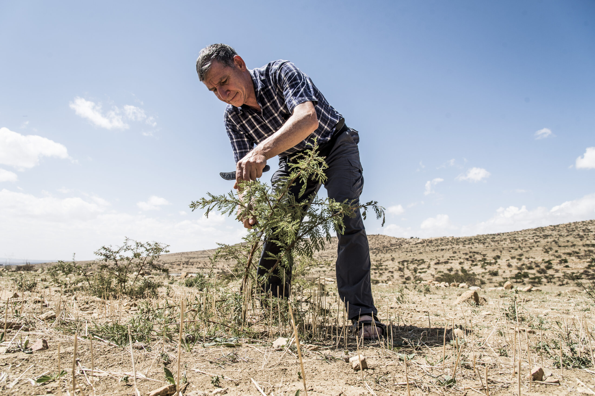
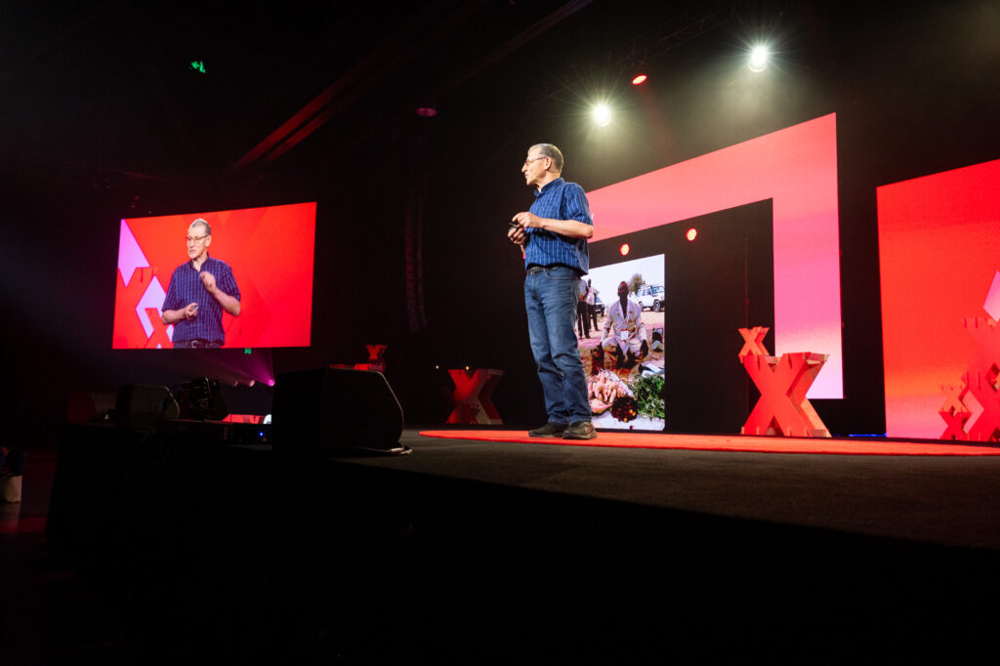
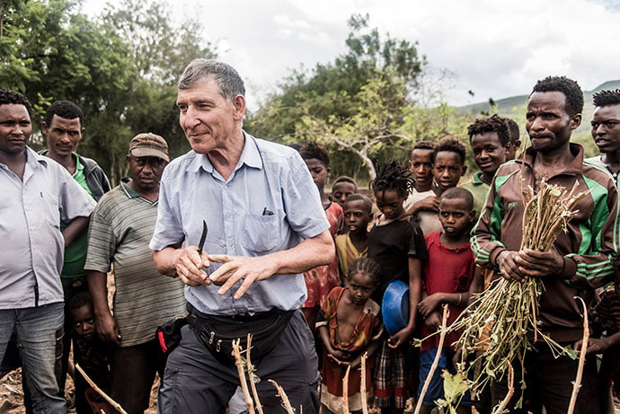
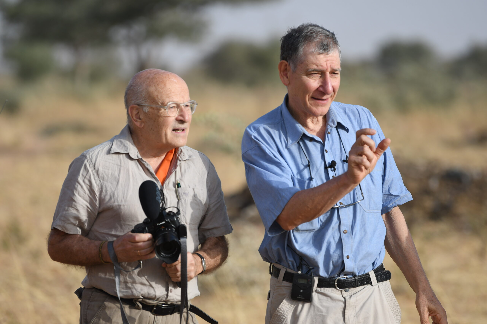
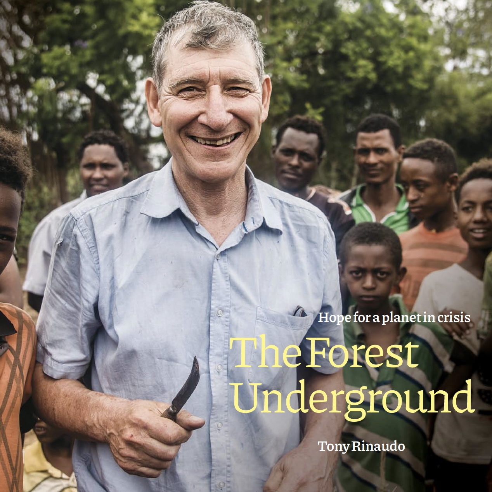

The journey
Tony Rinaudo arrives in the Maradi region of Niger as a missionary agronomist. The landscape is bleak — a semi-arid wasteland stripped bare by decades of over-farming, drought and population pressure.


During a moment of despair on a dusty road, Tony notices small green shoots emerging from what appear to be dead tree stumps — the living remnants of a vast "underground forest."

Tony receives the Right Livelihood Award in recognition of his transformative work in land restoration and food security.

Tony grew up in rural Australia with a deep love of the land. After completing his agricultural studies he moved to Niger in 1981 with his wife Liz, not knowing that a chance observation beside a dusty road would set the course for the rest of his life.
Over four decades he has dedicated himself to demonstrating that degraded land is not dead land — and that the communities who live on that land hold the keys to its restoration.
The trees were never dead. They were simply waiting for someone to give them permission to grow.
— Tony Rinaudo, FMNR Founder
His approach
When the agricultural establishment said the Sahel was beyond saving, Tony refused to accept it. He saw what others overlooked.
FMNR does not depend on outside experts. Tony's insight was radical: the solution already exists within farming communities.
Real change is contagious. By working with communities rather than for them, Tony's approach spreads farmer to farmer.
Recognition
Tony was recognised for showing at large scale how drylands can be greened at minimal cost.
View sourceAppointed AM for significant service to conservation as a pioneer in international reforestation.
Named Outstanding Environmental Peace laureate for restoration work.
View sourceTony explains FMNR's potential to restore degraded land while strengthening livelihoods.
Listen now ArticleA profile of Tony's work restoring millions of hectares of degraded land.
Read article PodcastA long-form conversation on mindsets and the human side of regeneration.
Listen now ArticleAn interview on Tony's early calling and the behaviour change behind FMNR.
Read articleTony's life work is a methodology available to everyone. Explore the research, training resources and community stories.